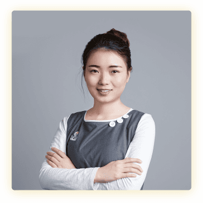
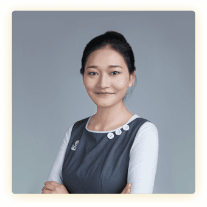
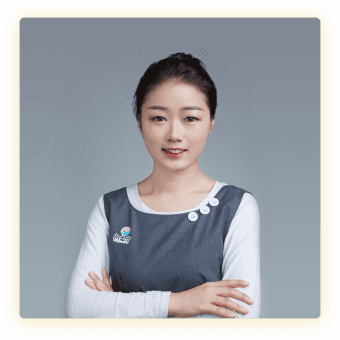
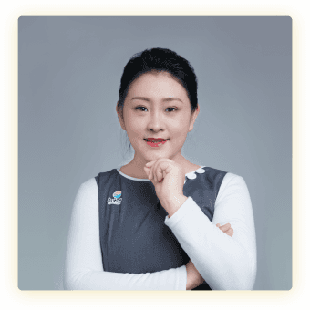
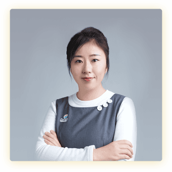

-
杨婧
老师
毕业于中央民族大学音乐学专业，擅长钢琴、长笛；从事幼儿教育11年，曾任全国各地38家园所教育督导；真心爱每一个孩子，愿用爱和音乐滋养所有的宝宝。
-

孟凡慧
老师
毕业于唐山师范学院学前教育 专业，擅长演讲、绘画；从事幼儿 教育及早教事业4年，精通婴幼儿 水育课程；喜欢和孩子在一起的温暖感觉，立志成为孩子成长道路上的 领路人。
-

安然
老师
毕业于北京第二外国语大学基础 日语和学前教育专业，擅长舞蹈和 手工，有极强的模仿能力；从事幼儿教育5年，拥有日式幼儿园3年工作 经验；喜欢看到孩子的笑容，希望 用心守护每一位宝宝的纯真。
-
黄伊铭
老师
毕业于阜阳大学英语教育专业， 二胡十级，擅长钢琴、声乐、舞蹈； 从事幼儿教育及早教事业3年，熟悉幼儿思维开发和音乐课程；愿意发现每一个孩子的独特，希望把幼儿教育作为自己的终身事业。
-

徐宁
老师
毕业于北京经济技术研修学院学前教育专业，精通蒙氏亲子、奥尔夫 音乐、儿童感统课程；从事幼儿教育6年，拥有丰富的教学和育儿经验；愿给宝宝家人一样的温暖，陪伴他们健康快乐地成长。
-
高玉娟
老师
毕业于定西师范学前教育专业， 擅长声乐；从事幼儿教育及早教事业3年，对幼儿音乐及英语教育十分 熟悉；认为每个宝宝都是最纯洁的 天使，想要和更多宝宝有灵魂的交流与碰撞。
-

陈佳佳
老师
毕业于大连中央广播电视大学学前教育专业，擅长舞蹈、钢琴，多次获得幼师比赛奖项；从事幼儿教育3年，是深受家长喜爱的主班老师； 坚信幼儿教师是世界上最有价值的职业，立志成为一名优秀的老师。
-

董莹
老师
毕业于大连翻译学院日韩双语 专业，擅长架子鼓演奏；从事幼儿 教育3年，熟悉幼儿全脑开发的理论与课程；相信爱是能带来奇迹，愿成为孩子成长道路上最好的伙伴。
-
李春天
老师
毕业于哈尔滨幼儿师范学前教育 专业， 擅长美工、舞蹈、儿歌表演； 在幼儿知识理论的学习和幼儿教育中积累了丰富经验；愿意倾听孩子的心声、发现孩子的兴趣，让孩子感受爱和尊重。